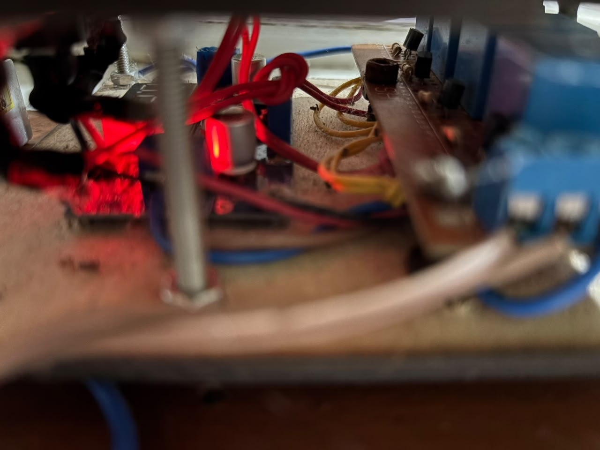
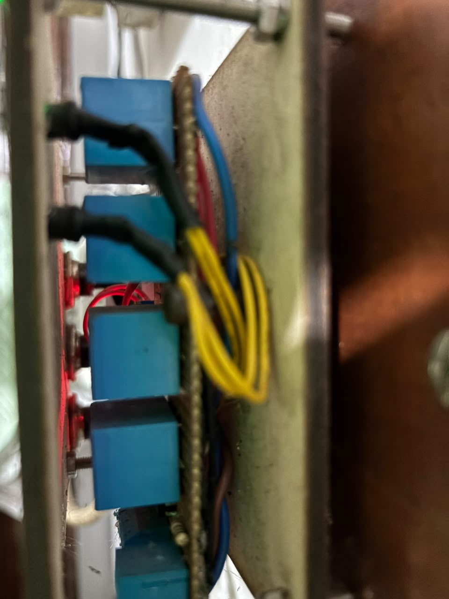

Water pump controller — 4-relay retentive switching stage for two solenoid valves, built for the home water supply.
Water Pump Controller
What it is
A retentive relay controller built to drive two solenoid valves for the home water supply. Four relays with latching logic — state persists across power cycles, so a brief outage doesn't leave the valves in an unknown state when supply returns.
Housed in a metal enclosure with a mains PSU, front-panel buttons, and indicator LEDs for power and valve state. Mounted and running continuously.
Key features
- Four-relay control stage — two solenoid valves, each with independent drive
- Retentive switching logic — survives brief power outages without losing valve state
- DIN-rail mains PSU inside the enclosure
- Front panel with power indicator and per-valve state LEDs
- Metal enclosure for permanent wall mounting
Inside

Internal layout
Four blue relay modules, mains PSU, and latching control wiring.

Relay bank
Four relays — two per valve, wired for retentive state.